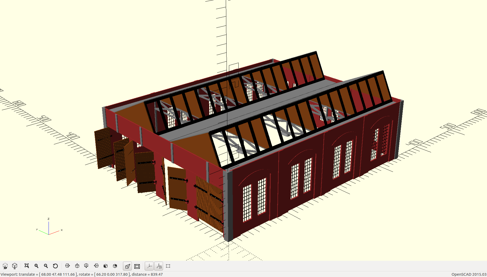
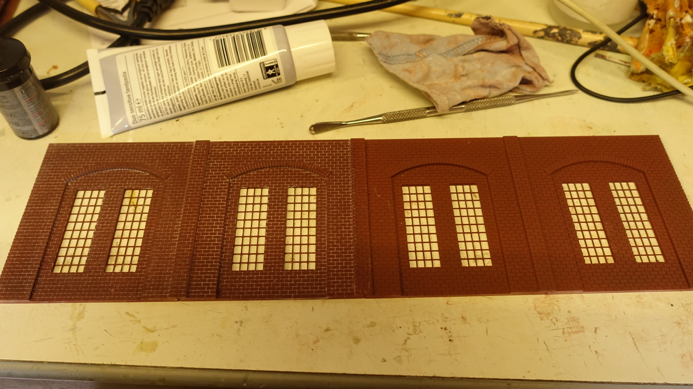
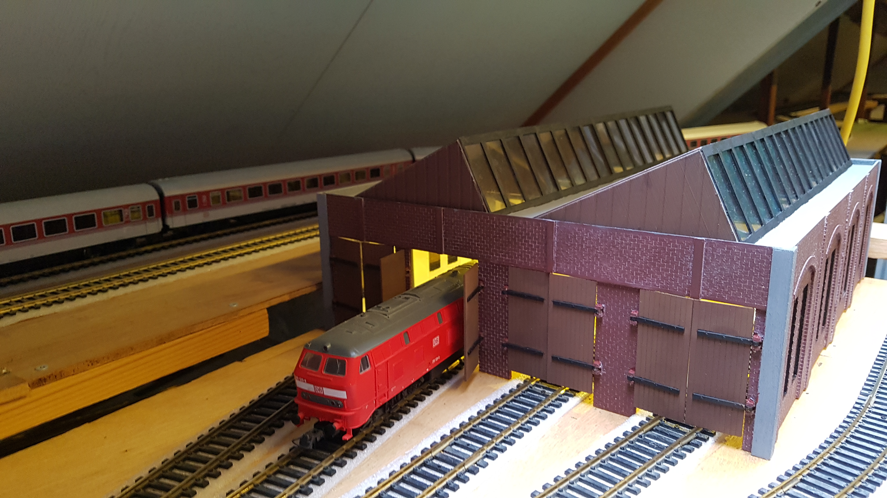

After finishing the turntable I needed to design a locomotive shed. Normally you would use a roundhouse but that was not possible
on my track so I designed a square building. This is a impression on the openscad design.

In order to get a good stone pattern, I printed the pannels with on the topside small bricks. Eventhough the pattern is very regular
after printing it looks ok, since the nozzle will not exactly repeat each stone. After airbrushing you have to fill the joints. I did this
with toothpaste. It worked very well. Toothpaste can be wrubbed into the joints and easily removed if needed. But after drying it is
resonable hard.

And this is how it has turned out on my track

The stone pattern was printed by printing small bricks at the last couple of layers. Yes the printer did have some retraction problems
with the pattern but it was able to deliver a decent overall effect. After spraying it I used toothpaste to fill the room between the
stones. Toothpaste works quite well since you can remove it and apply again untill the desired effect.
